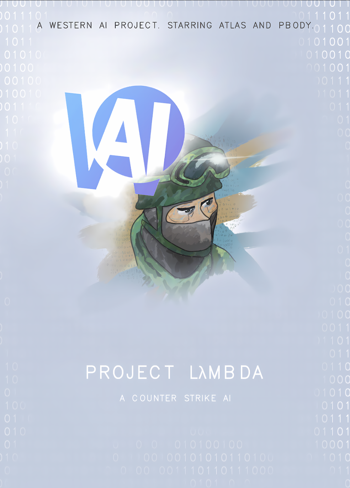

Portfolio
Check Out Some of My Projects/Code. (Can find more on my Github)

Western AI CSGO Project
AI Project


Western AI CSGO Project
As project lead for a team of eight, I designed a competitive AI agent for Counter-Strike built around graph-based navigation, heuristic pathfinding, and dynamic decision trees. I analyzed real gameplay patterns to tune the agent's response time, error margins, and unpredictability for more human-like behavior. Presented at a three-day multi-university conference, where it placed 2nd out of 56 groups. The architecture was later referenced internally as a template for future agent-based research.
AI Development